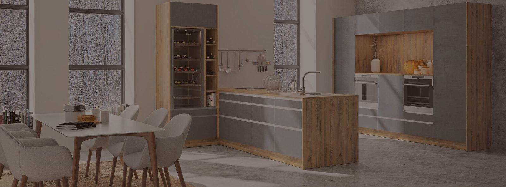
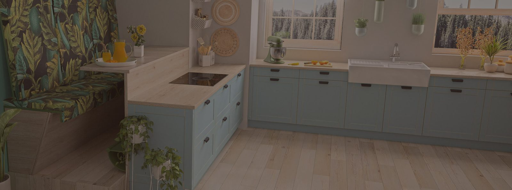
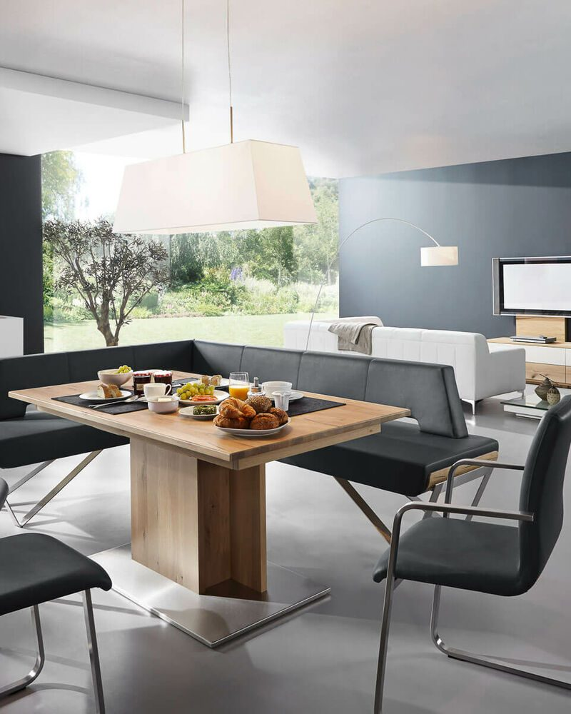

Schauraum St. Valentin
Einrichten mit Profis
Das Wohnstudio Wurz in Sankt Valentin ergänzt unsere Tischlerei in Kaltenberg: Im Schauraum nehmen Sie Möbelstücke, Einrichtungslösungen, unsere Aktiv-Küche und Elemente des Wohndesigns genau in Augenschein – und profitieren von der Einrichtungsberatung und -planung mit Tischlermeister Thomas Wurz.
Aktiv-Küche zum Ausprobieren
Als HAKA-Markenpartner ist Küchenplanung ein wichtiger Angebotsbereich. Tischlermeister Thomas Wurz ist selbst passionierter Hobbykoch und testet in der Aktiv-Küche gerne mit Kunden, welche Funktionen, Einbaugeräte und Stauraumlösungen wirklich Sinn machen. Vor der Küchenplanung machen Sie im Wohnstudio Wurz also den Küchen-Praxistest.
Inspiration und Wohnideen
Im Wohnstudio entdecken Sie Einrichtungsbeispiele für jeden Raum:
- Individuelle Garderoben-Lösungen für Vorzimmer
- Einrichtungsbeispiele für Wohn- und Esszimmer
- Inspirationen für die Schlafzimmer-Einrichtung
- Ausstellungssauna mit Infrarot-System – bereit für einen Test
Spanndecken und Wohndesign
Wohnstudio Wurz bietet die Planung und Umsetzung von Spanndecken, die sich ideal für Renovierungsprojekte, indirekte Beleuchtung oder Akustikdecken eignen. Auch komplette Wohndesigns aus der Feder von Thomas Wurz begeistern viele Kunden: Vom Boden bis zur Decke werden alle Details aufeinander abgestimmt.
Lichtdesign, Leuchten, Wohntextilien, Wandfarben und Bodenbeläge können Sie im Wohnstudio sehen, fühlen und sich dazu beraten lassen.
Einrichtungsplanung in vier Schritten
-
Grundkonzept entwickeln
Beim Erstgespräch im Wohnstudio entwickeln Sie kostenlos mit Thomas Wurz ein Grundkonzept. Dabei werden Bedarf, persönliche Vorstellungen, Wünsche und Ihr Budgetrahmen ermittelt – keine Standardlösungen, sondern echte Individualität.
-
Planungsauftrag erteilen
Hat Sie das Grundkonzept inklusive Budgetrahmen überzeugt, geht es in die Detailplanung: Alle Naturmaße werden bei Ihnen zu Hause genommen. Die kostenpflichtige Planung wird Ihnen zur Gänze zur Verfügung gestellt.
-
3D-Visualisierung
Virtuell setzen Sie die ersten Schritte durch Ihre neuen Wohnräume. Farben, Holzarten, Stoffe und Wandfarben werden vorgeschlagen; bei der Bemusterung im Wohnstudio nehmen Sie alle Materialien selbst in Augenschein und wählen aus.
-
Montage durch Profis
Unser Profi-Team sorgt für die fachmännische Montage. Beim kompletten Wohndesign koordinieren wir alle Gewerke und Arbeitsschritte. Zum Abschluss folgt eine offizielle Übergabe inklusive Tipps zur richtigen Pflege der Materialien.
Produktvielfalt, neue Wohnideen und individuelle Einrichtungsplanung machen Wohnstudio Wurz zum Einrichtungspartner im Großraum Linz und Mühlviertel. Jetzt Termin anfragen.
Galerie
Einblicke aus Schauraum und Werkstatt. Im Live-Betrieb wächst die Galerie mit jedem abgeschlossenen Projekt – ohne Umweg über einen Webdesigner.





